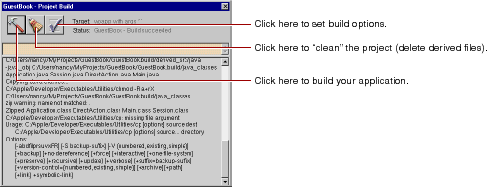

Table of Contents
Table of Contents  Previous Section
Previous Section
 in the toolbar to open the Project Build panel.
in the toolbar to open the Project Build panel.
 in the Project Build panel to build your project
in the Project Build panel to build your project

The Project Build panel displays the commands that are being executed to build your project. If all goes well, it displays the status message "Project Name - Build succeeded"
 Next Section
Next Section